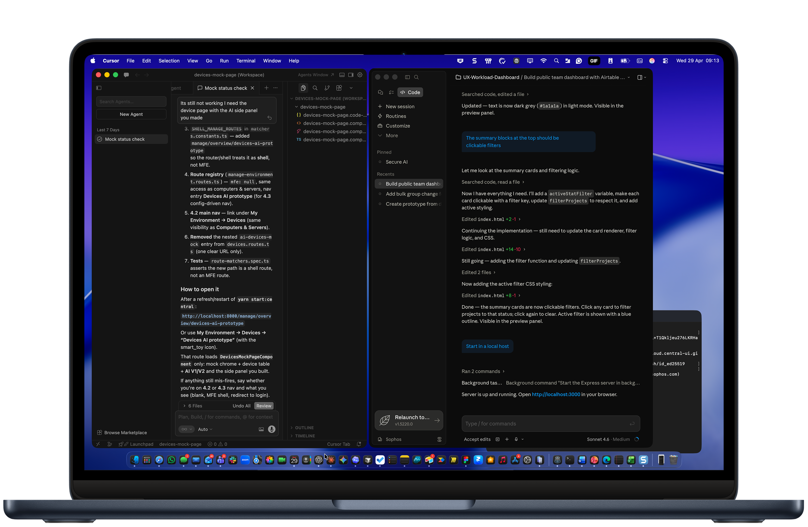
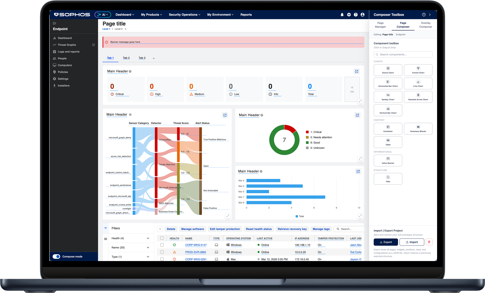
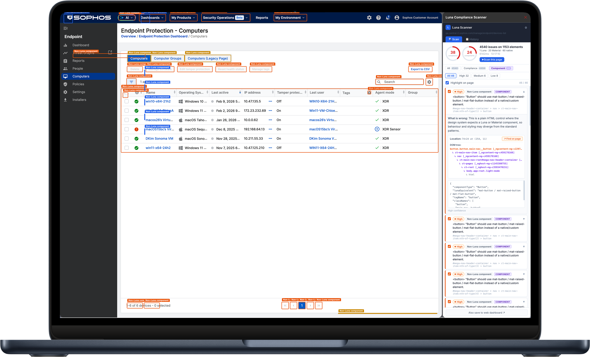
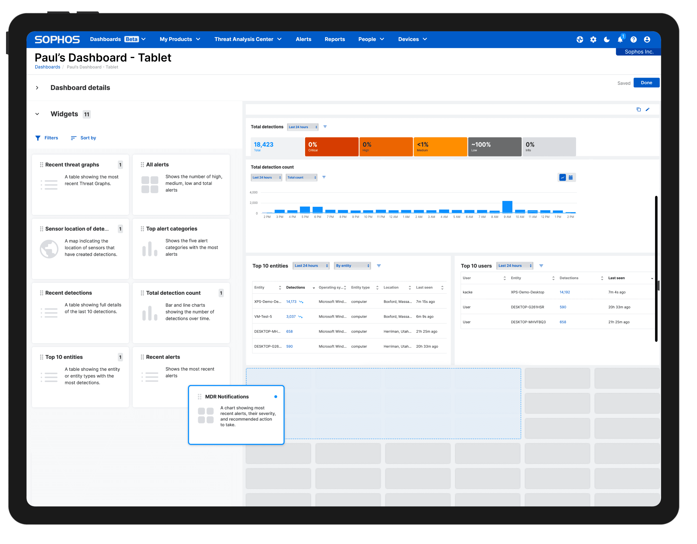

Open to new opportunities
Hey, I'm Paul.
Senior UX leader. 19 years designing and leading high-performing teams for enterprise SaaS, cybersecurity and financial services.

Senior UX leader. 19 years designing and leading high-performing teams for enterprise SaaS, cybersecurity and financial services.
19 years designing and leading teams for SaaS in cybersecurity and financial services. Currently Senior Manager of Global Platform UX & Design at Sophos, and open to what's next.
I build and mentor teams to deliver exceptional outcomes: from interaction design and IA through to design systems and usability testing. Hands-on, solutions-focused, and committed to craft.
HFI Certified Usability Analyst. Technically savvy. Part-time pianist.
Leading the shift from traditional UX delivery to an AI-first operating model across mindset, workflow, and organisational capability.

View case studyAn internal tool that shifts UI design from blank-canvas creation to composable, system-driven page assembly across Sophos Central.

View case studyA Chrome extension that scans live and development builds of Sophos Central to score compliance with Luna, the Sophos design system.

View case studyA tiered investment model that aligned design resources to strategic importance across a global SaaS platform.

From third-party agency to fully in-house ownership - a unified design language across four product platforms.

Replacing rigid legacy dashboards with a fully flexible canvas - users building their own views with relevant widgets.

Two distinct nav redesigns - top-level mega nav at Sophos, and a site-wide MegaNav for Nationwide Building Society.

A new Contact Us tool that delivered a 36% improvement in customer satisfaction - Nationwide's largest ever CSAT gain.

Helping Nationwide customers see, at a glance, how much an overpayment would save them on their mortgage - designed under strict legal and compliance review.

Leading the global UX and design function for a major enterprise cybersecurity SaaS platform - setting strategic vision, managing cross-functional design teams, and driving design maturity at an organisational level.
Managed UX across four distinct product surfaces. Built team capability, established governance and process standards, and embedded research-led design into delivery cycles across multiple engineering squads.
Led UX across multiple enterprise security products - rebuilt Intercept X for Mobile (doubling App Store ratings), created Sophos' first design system, and designed the Sophos Labs data intelligence suite.
Delivered the site-wide MegaNav, a Contact Us tool (36% CSAT uplift - Nationwide's largest ever), the Apple Watch banking launch, and paid media landing pages with a 20% conversion uplift.
Responsible for all operational MI design, architecture, and production. Recognised for an exceptional redesign that set a new standard for usable, decision-ready reporting.
Headhunted to Nationwide by the Head of Planning & Support. Designed and delivered MI solutions and reporting architecture for senior stakeholders.
Recognised for establishing the first design standards for all MI suites, dashboards, and tools across the UK start-up operation.